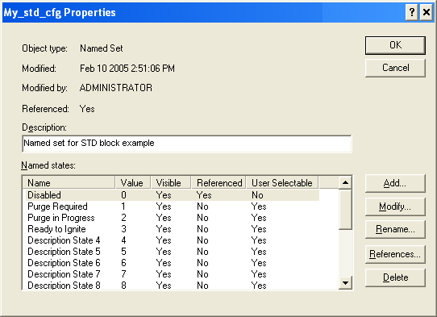

State Transition Diagram function block application information
To implement a state transition diagram in an STD block, first create a table of the possible system states and allowed transitions between states. For example, the state transition diagram at the beginning of this topic could be mapped to the following table.
|
States (Outputs) |
Transitions (Inputs) |
|
|---|---|---|
|
Start Purge |
Purge Completed |
|
|
Purge Required |
Purge in Progress |
— |
|
Purge in Progress |
— |
Ready to Ignite |
|
Ready to Ignite |
— |
— |
The next step is to configure the transitions (inputs) and states (outputs). Use the Extensible Parameters dialog (right-click the block and select Extensible Parameters) to configure the number of each. Label the transitions (inputs) by configuring DESC_INn parameters. Label the states (outputs) by copying, renaming, and editing $ctlr_std_seq_states (in DeltaV Explorer under System Configuration/Setup/Named Sets). The following figure shows the configuration of the named set My_std_cfg.

Do not rename or edit the Disabled named state. Leave the User Selectable setting to No.
Next, associate the named set with the STD block from the Properties dialog of the STATE parameter.
Finally, you can configure the MATRIX parameter to map the transitions and states as shown in the following figure.

Note that the configured matrix looks like the table created from the original state transition diagram.